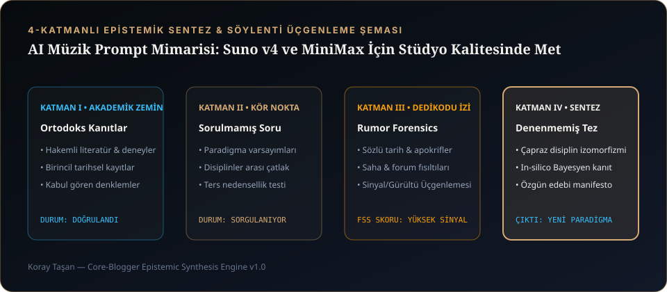

1. Neden "Melancholic Good Song" Yazmak Çamur Gibi Bir Miks Üretir?
Suno (v3.5 / v4) veya MiniMax Music-01 gibi difüzyon ve otoregresif ses modellerini ilk kez açan kullanıcıların %90'ı aynı hatayı yapar: Tarz (Style) kutusuna sad song, emotional, great vocals, hit music gibi soyut sıfatlar yazar ve sözleri hiçbir yapısal işaret koymadan tek blok hâlinde yapıştırır.
Sonuç? Girişi olmayan, kıta ile nakarat arasında hiçbir dinamik fark bulunmayan, vokalin enstrümanların altında boğulduğu ve 4. dakikada cümle ortasında kesilen "jenerik" bir ses dosyası. Çünkü yapay zekâ ses modelleri soyut duyguları değil; akustik mekaniği, enstrüman frekans bölgelerini, mikrofon mesafesini ve zamansal form etiketlerini (meta-tags) anlar.
Bir prompt yazarken kendinizi bir dinleyici gibi değil, miks masasının başındaki kayıt mühendisi ve aranjör gibi konumlandırın. Modele "duygusal olsun" demeyin; close-mic dry baritone vocal, sparse felt piano, muted sub-bass pulse, 118 BPM diyerek o duyguyu üretecek fiziksel ortamı tarif edin.
2. Deterministik Şarkı Haritası (Song Map) ve Meta-Tag Hiyerarşisi
Suno ve MiniMax modellerinde köşeli parantez [...] içindeki komutlar, modelin dikkat (attention) mekanizmasını doğrudan yönlendiren yapısal yol işaretleridir. CORE MUSIC prodüksiyonlarında kullandığımız altın standart şarkı haritası şu üç katmandan oluşur:
- Üst Katman — Küresel Miks ve Vokal Kilidi (Global Header Tags): Şarkı sözlerinin en tepesine, henüz
[Intro]bile başlamadan önce yerleştirilir. Tüm parça boyunca mikrofon karakterini ve stereo genişliği kilitler. - Orta Katman — Bölüm ve Enerji Geçiş Etiketleri (Arrangement Tags):
[Intro],[Verse 1],[Pre-Chorus],[Chorus],[Bridge]gibi bölümlerin yanına iki nokta üst üste konularak o bölümde hangi enstrümanın girip çıkacağı yazılır (Örn:[Pre-Chorus: cello enters, rising tension]). - Alt Katman — Kapanış Kilidi (Termination Lock): Şarkının sonunda sonsuz döngüye girmesini veya aniden kesilmesini önleyen
[Outro: ...],[Fade Out]ve mutlak[End]üçlüsüdür.

3. Telif Filtrelerine Takılmadan Tarz Kodlama (Sonic Deconstruction)
Platformlarda doğrudan ünlü bir sanatçının veya grubun adını yazmak (örn. "in the style of...") hem telif güvenlik filtreleri tarafından engellenir hem de sizi taklitçi bir tınıya hapseder. Profesyonel yöntem Akustik Yapısöküm (Sonic Deconstruction) tekniğidir: Sevdiğiniz bir tınıyı 5 bileşene ayırarak kodlarsınız: 1) Alt Tür, 2) Tempo/Groove, 3) Başrol Enstrümanları, 4) Vokal Dokusu, 5) Oda/Miks Atmosferi.
| Hedeflenen Atmosfer | Yanlış (Soyut / Engelleyici) | Doğru (CORE MUSIC Akustik Yapısöküm Promptu) |
|---|---|---|
| Cihangir Gece Akustiği (khrysaor) | sad turkish indie song, emotional singer |
nocturnal indie ballad, 112 BPM, sparse felt piano, warm upright bass, intimate close-mic male baritone, restrained conversational delivery, dry analog room warmth |
| Londra Gece Sürüşü (CORE LONDON) | dark weeknd style pop club hit |
dark melodic electronic pop, 120 BPM four-on-the-floor, analog prophet synth pad, deep sidechained sub-bass, punchy gated snare, smooth melancholic vocal, wide stereo master |
| Gerilim Film Müziği (SUSSUZ) | scary movie soundtrack orchestral |
cinematic neo-classical score, slow 72 BPM, solo weeping cello ostinato, distant sub-bass drone, prepared piano hits, cavernous hall reverb, tense atmospheric build |
| Modern Anadolu / Kutlama (ANGARALI KEREMSİ) | turkish upbeat dance song |
upbeat Anatolian electro-folk groove, 128 BPM, electric baglama riff, crisp darbuka and bendir percussion, energetic charismatic male vocal, bright punchy studio mix |
4. Bölüm Etiketleri Sözlüğü: [Intro], [Verse], [Pre-Chorus], [Chorus], [Bridge], [End]
Şarkı sözlerinizin arasına yerleştireceğiniz bu etiketler, yapay zekânın her 4 veya 8 ölçüde bir aranjmanı nasıl değiştireceğini belirler:
- Küresel Miks Direktifleri:
[Production: clear vocals, high fidelity, wide stereo, natural dynamics]veya[Mix: dry upfront vocal, muted kick, warm vintage upright piano] - Vokal Direktifleri:
[Vocal: intimate male baritone, straight tone, restrained delivery, slight breathiness, no belting] - Giriş (Intro):
[Intro: instrumental, sparse felt piano, distant analog sub pulse, eight bars]— İpucu: "eight bars" (sekiz ölçü) yazmak, modelin vokale çok erken veya çok geç girmesini engeller. - Kıta (Verse):
[Verse 1: quiet, conversational vocal, sparse instrumentation, muted bass]— Kıtalarda enstrümanları azaltın ki nakarat girdiğinde patlama etkisi oluşsun. - Köprü Öncesi (Pre-Chorus):
[Pre-Chorus: cello enters, snare roll builds, rising melodic tension] - Nakarat (Chorus):
[Chorus: memorable hook, full warm bass guitar, wide stereo synth pad, vocal octave layering] - Kırılma (Bridge):
[Bridge: stripped back, isolated piano and single dry vocal, poignant pause]— 2. nakarattan sonra müziği bir anda soyutlamak, son nakaratın duygusal yıkım gücünü ikiye katlar. - Kapanış (Outro & End):
[Outro: felt piano motif repeats, distant reverb decay]+[Fade Out]+[End]
5. Kopyala-Yapıştır: CORE MUSIC Stüdyo Prompt Şablonları
Aşağıdaki iki tam şablonu doğrudan kendi üretimlerinizde iskelet olarak kullanabilirsiniz:
STYLE PROMPT: nocturnal atmospheric indie, 116 BPM, D# minor, sparse felt piano, warm fretless bass, subtle brushed drums, intimate close-mic male baritone vocal, conversational delivery, analog tape warmth, clean studio master LYRICS & ARRANGEMENT BOX: [Production: intimate dry room, upfront close-mic vocal, warm analog saturation, wide stereo] [Vocal: deep resonant male baritone, restrained emotional delivery, natural breath, no belting] [Intro: instrumental, delicate felt piano ostinato, distant warm sub-bass pulse, eight bars] [Verse 1: quiet conversational vocal, sparse piano chords, no drums] Gece indi yine Cihangir yokuşuna Sokak lambaları titriyor ıslak taşta Kimseye söylemediğim o eski cümle Dönüp duruyor yine aynı bardakta [Pre-Chorus: subtle brushed snare enters, warm cello swell, rising tension] Saat dört olmuş, vapurlar çoktan sustu Şehir kendi sesini içine yuttu [Chorus: full emotional lift, warm bass guitar enters, memorable melodic hook, subtle low harmony] Bilmem, ben de nerede bıraktım bizi Hangi yağmur sildi o son izi Susmak bazen en gürültülü cümleymiş Geç olmadan duy içimdeki sesi [Bridge: stripped back, isolated felt piano and single dry whispered vocal] Belki de hiç gitmedik o köşeden... [Chorus: final climax, lush strings, deep warm bass, emotional baritone vocal] Bilmem, ben de nerede bıraktım bizi Hangi yağmur sildi o son izi [Outro: solo felt piano motif, vinyl warmth, slow natural decay] [Fade Out] [End]
STYLE PROMPT: dark melodic electronic pop, 122 BPM, A minor, pulsing Moog sub-bass, analog arpeggiator, punchy four-on-the-floor kick, gated reverb snare, hypnotic atmospheric male vocal, London night drive aesthetic, crisp high-end master LYRICS & ARRANGEMENT BOX: [Production: punchy transient drums, heavy analog sidechain, wide 3D spatial stereo field] [Vocal: smooth atmospheric tenor-baritone, cool nocturnal delivery, subtle stereo delay] [Intro: filtered analog synth arpeggio, low-pass filter sweep, deep sub-bass pulse, eight bars] [Verse 1: minimal beat, muted kick, upfront dry vocal] Rain on the windshield, neon in the rear-view Every red light looks a little bit like you Cold asphalt under four AM wheels Nobody talks about the way the silence feels [Pre-Chorus: drums filter in, rising white-noise sweep, snare build] And the city keeps running on borrowed time Crossing the border of yours and mine [Chorus: explosive dark synth drop, full sub-bass groove, layered octave vocals] We pay the price on the cold asphalt No one to blame, nobody's fault Running through the dark till the streetlights fade Living in the echo of the choice we made [Outro: pulsing sub-bass and arpeggio slowly filter down, reverb tail] [Fade Out] [End]
Prompt iskeletini kurduktan sonra şarkının kalbini oluşturan en kritik aşama sözlerin ritmik matematiğidir. Bunun için "Ritim, Anlamın Nefesidir": Şarkı Sözü Yazımı Teknikleri ve Türkçe Prozodi rehberimize geçebilirsiniz.